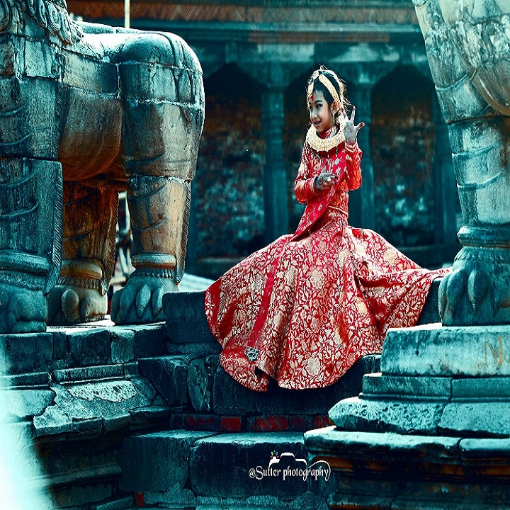
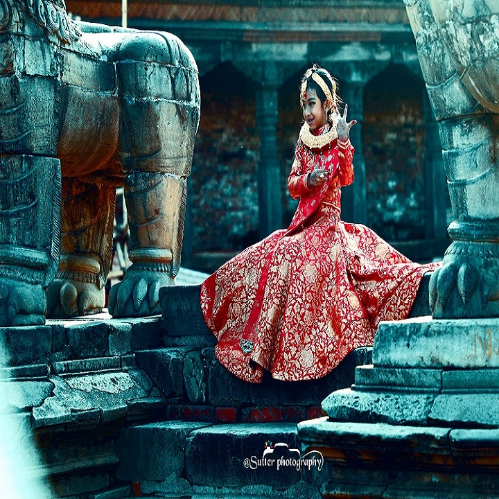

The city of lakes is the mirror of snowcapped mountains as their image reflects on the lake water. For adventure lovers, there are different activities like Sky diving, Paragliding, Ultralight flight, Rafting, Zip flying, Hot air ballooning, etc. Nearby Pokhara there are 18 trek routes for short trek. Dhaulagiri, Annapurna and Manaslu mountain ranges can be seen from here. The major places to visit in Pokhara are White Monastery, David’s fall, Mahendra Cave, Gupteshwar Cave, Phewa Lake, Begnas Lake, Rupa Lake, Bindhyabasini Temple, World Pace Stupa etc. There are eight different lakes in Pokhara and its periphery.

Not only for religious tourism, Lumbini is a must visit place for those interested in archeology. It is locate in Rupandehi district of province No. 5 in Nepal. This birth place of Gautama Buddha has many Stupas and Monasteries. The Mayadevi temple of Lumbini is named after Lord Buddha’s mother Mayadevi. The attractions of Lumbini are Puskarini holy pond, Ashoka Pillar, Sacred Bodhi Tree, World Peace pagoda, Myanmar Golden Temple, Lumbini Crane Sanctuary, Lumbini International Research Institute and many more. Lumbini is listed as UNESCO world heritage site because of its historic importance.


The Chitawan National Park is not only the second South Africa with regards to flora and fauna but also the habitat of world famous one horned rhino. Jungle safari, elephant safari, elephant bathing, crocodile breeding center, elephant breeding center and nature walk are the major attractions of Chitwan National Park. Passing along the road from Tandi one can roam inside the Park. The pleasure of observing the sunset from the river bank cannot be described in words. Everyday flights are available from Kathmandu to Chitwan.
The Everest Base Camp trek has been ranking frequently as the best trekking region of the entire world. This trekking route lets you reach Kalapatthar too. Taking a flight from Kathmandu to Lukla the trek begins and finishes around 17 days. It’s everyone’s’ dream to step in to the lap of Mt. Everest.

Janakidham is the famous city of Dhanusha and is the land of saint king Janak and his daughter Janaki (Sita). It’s the pillar of Maithili civilization which is religiously and culturally rich. The city is 400 km driving distance away from capital city Kathmandu and slowly emerging as tourist destination. The famous Ram-Janaki temple here has its own importance. The temple was built in 1911 by Brishabhan; the royal princess of Tikamgadh, Bharat (India).